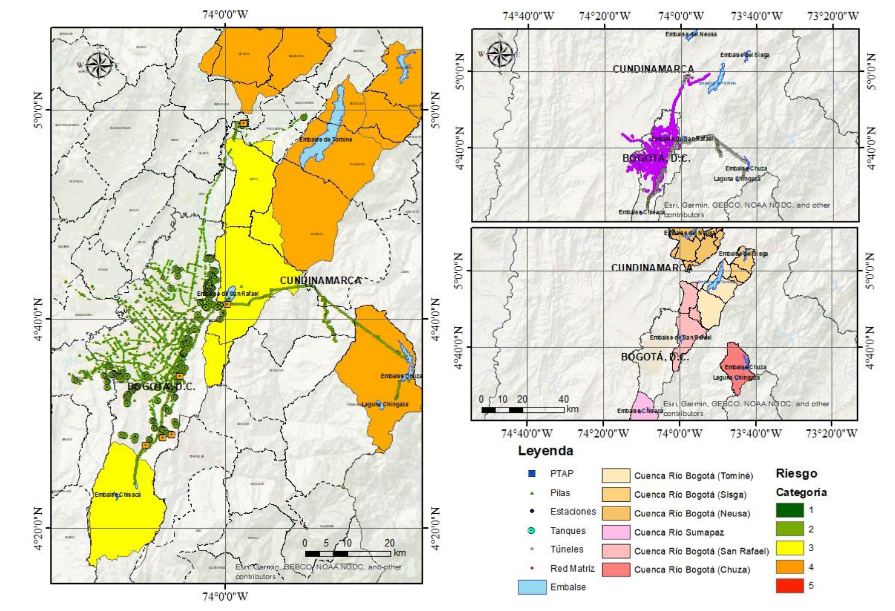
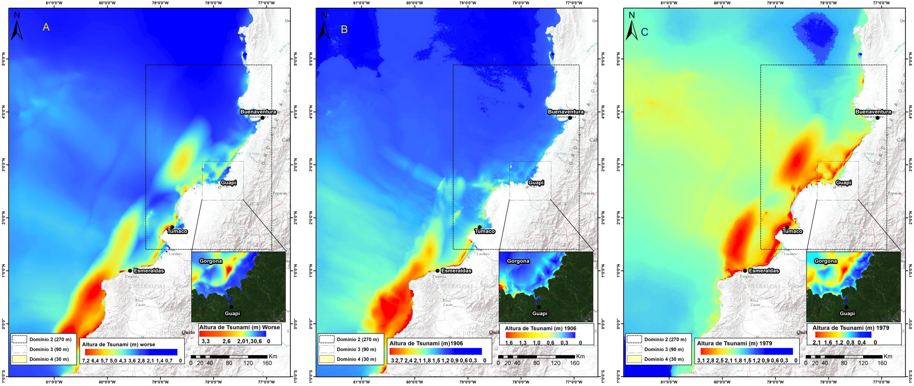
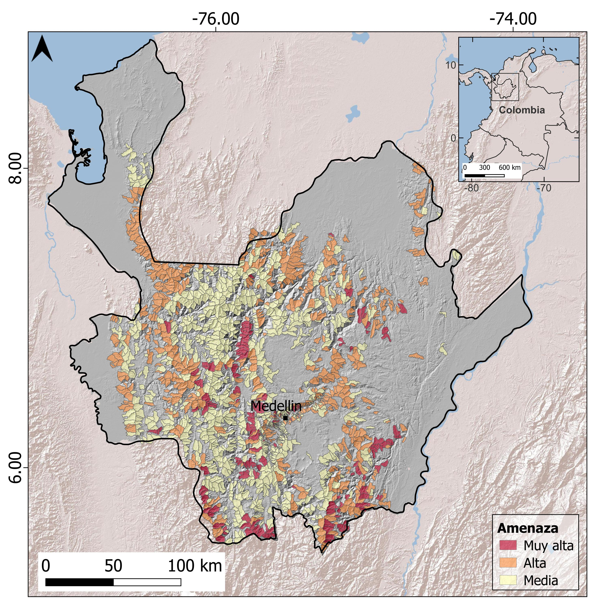
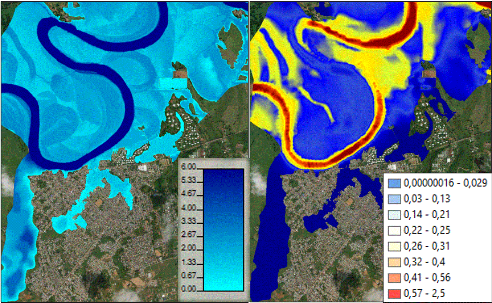
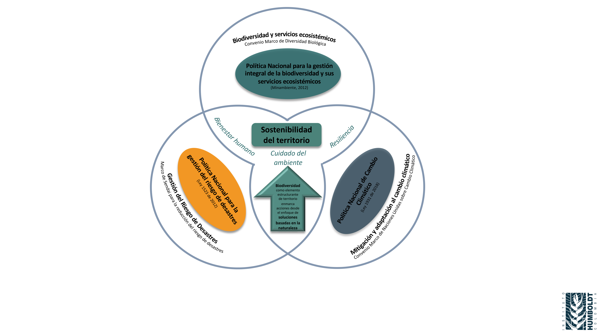
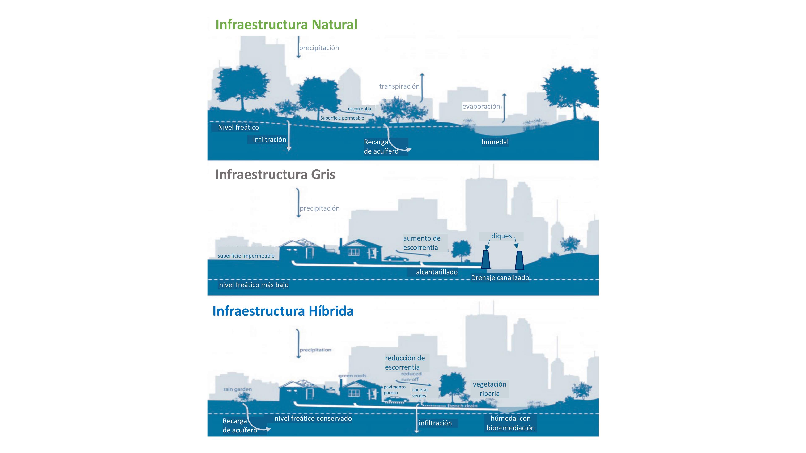
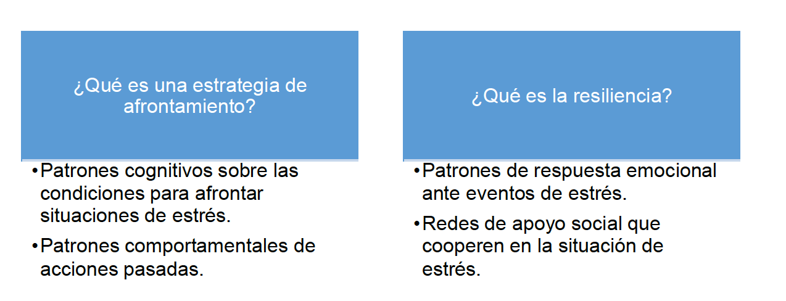

Investigaciones en Gestión del Riesgo de Desastres para Colombia del 2023
Bienvenido a la colección de la serie de libros de Investigaciones en Gestión del Riesgo de Desastres para Colombia. A continuación, puede explorar los diferentes capítulos de este volúmen:

Autores: Rafael Fernández, Manuel Rodríguez Susa, Mildred Lemus, Iván Alejandro Giraldo, Lina Porras, Juliana Martínez, Juan Sebastián Echeverry, Carlos Oliveros, Juan Carlos Reyes, Nubia León, Diego Gutiérrez

Autores: Ronald Efrén Sánchez Escobar, Paola Andrea Quintero Rodríguez, Fabio Hernán Realpe Martínez, Daniel Ruiz Figueroa, Jhonatan Cristian Paz Quintero

Autores: Alejandro Franco Rojas, Álvaro Rodríguez Páez, Sandra Yanet Velazco Flórez, Juan Pablo Londoño Linares, Orlando Rincón Arango

Autores: Edier Aristizábal, Federico Gómez Cardona, María Isabel Arango Carmona

Autores: Daniela Torinjano Jiménez, Adriana Osorio Mosquera, Alejandro Marulanda Tobón

Autores: Juan Camilo Olaya González, Paula Andrea Villegas González, Jairo Andrés Valcárcel Torres, Julián Darío Arbeláez Salazar, Fabián Mauricio Caicedo Carrascal, José Ville Triana García, Lina Dorado González, Juan Pablo Forero Acevedo, Maykel Yisseth Gutiérrez

Autores: Diana M. Rodríguez-Coca, Julián Alberto Espejo-Díaz, William J. Guerrero

Autores: Luz Adriana Muñoz-Duque, Óscar E. Navarro Carrascal

Autores: Sandra Eliana Alzate Vargas, Sandra Patricia Duque Quintero

Autores: Carlos Mario Piscal Arevalo, Juan Andrés Oviedo Amezquita

Autores: Dorotea Cardona Hernández

Autores: Carolina García Londoño, María Angela Echeverry-Galvis, Lina Ospina Ostios, Constanza Ricaurte-Villota, Mauricio Romero-Torres

Autores: Yamile Valencia-González, José Camapum de Carvalho, Luis Augusto Lara-Valencia

Autores: Olga Alicia Nieto Cárdenas

Autores: Olga Liliana Pineda López, Joan Sebastián Arbeláez Caro, Luz Stela Quintana Hernández, Laura Vanessa Corrales Brand, Valentina Ospina Poveda, Carla María Zapata Rueda